Summary
This experiment investigates swimming stroke efficiency. Central composite design to maximize speed and minimize energy expenditure by tuning stroke rate, stroke length, and kick tempo.
The design varies 3 factors: stroke rate (strokes/min), ranging from 40 to 70, stroke length m (m), ranging from 1.5 to 2.5, and kick ratio (kicks/stroke), ranging from 2 to 6. The goal is to optimize 2 responses: speed m s (m/s) (maximize) and energy kj 100m (kJ/100m) (minimize). Fixed conditions held constant across all runs include stroke = freestyle, pool = 25m.
A Central Composite Design (CCD) was selected to fit a full quadratic response surface model, including curvature and interaction effects. With 3 factors this produces 22 runs including center points and axial (star) points that extend beyond the factorial range.
Quadratic response surface models were fitted to capture potential curvature and factor interactions. The RSM contour plots below visualize how pairs of factors jointly affect each response.
Key Findings
For speed m s, the most influential factors were stroke rate (64.0%), stroke length m (26.5%), kick ratio (9.5%). The best observed value was 1.82 (at stroke rate = 40, stroke length m = 2.5, kick ratio = 2).
For energy kj 100m, the most influential factors were stroke rate (50.5%), stroke length m (26.7%), kick ratio (22.8%). The best observed value was 24.0 (at stroke rate = 55, stroke length m = 2, kick ratio = 4).
Recommended Next Steps
- Run confirmation experiments at the predicted optimal settings to validate the model.
- Consider whether any fixed factors should be varied in a future study.
Experimental Setup
Factors
| Factor | Low | High | Unit |
|---|
stroke_rate | 40 | 70 | strokes/min |
stroke_length_m | 1.5 | 2.5 | m |
kick_ratio | 2 | 6 | kicks/stroke |
Fixed: stroke = freestyle, pool = 25m
Responses
| Response | Direction | Unit |
|---|
speed_m_s | ↑ maximize | m/s |
energy_kj_100m | ↓ minimize | kJ/100m |
Configuration
{
"metadata": {
"name": "Swimming Stroke Efficiency",
"description": "Central composite design to maximize speed and minimize energy expenditure by tuning stroke rate, stroke length, and kick tempo"
},
"factors": [
{
"name": "stroke_rate",
"levels": [
"40",
"70"
],
"type": "continuous",
"unit": "strokes/min"
},
{
"name": "stroke_length_m",
"levels": [
"1.5",
"2.5"
],
"type": "continuous",
"unit": "m"
},
{
"name": "kick_ratio",
"levels": [
"2",
"6"
],
"type": "continuous",
"unit": "kicks/stroke"
}
],
"fixed_factors": {
"stroke": "freestyle",
"pool": "25m"
},
"responses": [
{
"name": "speed_m_s",
"optimize": "maximize",
"unit": "m/s"
},
{
"name": "energy_kj_100m",
"optimize": "minimize",
"unit": "kJ/100m"
}
],
"settings": {
"operation": "central_composite",
"test_script": "use_cases/210_swimming_stroke/sim.sh"
}
}
Experimental Matrix
The Central Composite Design produces 22 runs. Each row is one experiment with specific factor settings.
| Run | stroke_rate | stroke_length_m | kick_ratio |
|---|
| 1 | 55 | 2 | 4 |
| 2 | 70 | 1.5 | 6 |
| 3 | 40 | 2.5 | 2 |
| 4 | 55 | 2.91287 | 4 |
| 5 | 55 | 2 | 4 |
| 6 | 27.6139 | 2 | 4 |
| 7 | 55 | 2 | 0.348516 |
| 8 | 55 | 2 | 4 |
| 9 | 70 | 2.5 | 2 |
| 10 | 82.3861 | 2 | 4 |
| 11 | 55 | 2 | 4 |
| 12 | 55 | 1.08713 | 4 |
| 13 | 55 | 2 | 4 |
| 14 | 40 | 1.5 | 6 |
| 15 | 55 | 2 | 4 |
| 16 | 70 | 1.5 | 2 |
| 17 | 55 | 2 | 7.65148 |
| 18 | 70 | 2.5 | 6 |
| 19 | 55 | 2 | 4 |
| 20 | 40 | 1.5 | 2 |
| 21 | 40 | 2.5 | 6 |
| 22 | 55 | 2 | 4 |
Step-by-Step Workflow
1
Preview the design
$ doe info --config use_cases/210_swimming_stroke/config.json
2
Generate the runner script
$ doe generate --config use_cases/210_swimming_stroke/config.json \
--output use_cases/210_swimming_stroke/results/run.sh --seed 42
3
Execute the experiments
$ bash use_cases/210_swimming_stroke/results/run.sh
4
Analyze results
$ doe analyze --config use_cases/210_swimming_stroke/config.json
5
Get optimization recommendations
$ doe optimize --config use_cases/210_swimming_stroke/config.json
6
Multi-objective optimization
With 2 competing responses, use --multi to find the best compromise via Derringer–Suich desirability.
$ doe optimize --config use_cases/210_swimming_stroke/config.json --multi
7
Generate the HTML report
$ doe report --config use_cases/210_swimming_stroke/config.json \
--output use_cases/210_swimming_stroke/results/report.html
Features Exercised
| Feature | Value |
|---|
| Design type | central_composite |
| Factor types | continuous (all 3) |
| Arg style | double-dash |
| Responses | 2 (speed_m_s ↑, energy_kj_100m ↓) |
| Total runs | 22 |
Analysis Results
Generated from actual experiment runs using the DOE Helper Tool.
Response: speed_m_s
Top factors: stroke_rate (64.0%), stroke_length_m (26.5%), kick_ratio (9.5%).
ANOVA
| Source | DF | SS | MS | F | p-value |
|---|
| Source | DF | SS | MS | F | p-value |
| stroke_rate | 4 | 0.5151 | 0.1288 | 2.683 | 0.1008 |
| stroke_length_m | 4 | 0.2231 | 0.0558 | 1.162 | 0.3888 |
| kick_ratio | 4 | 0.0897 | 0.0224 | 0.467 | 0.7587 |
| Lack | of | Fit | 2 | 0.0000 | 0.0000 |
| Pure | Error | 7 | 0.3359 | | |
| Error | 9 | 0.2608 | 0.0480 | | |
| Total | 21 | 1.0887 | 0.0518 | | |
Pareto Chart

Main Effects Plot

Normal Probability Plot of Effects
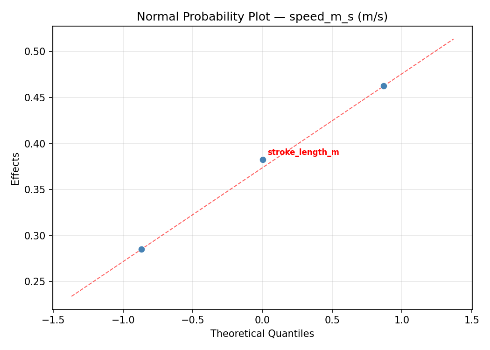
Half-Normal Plot of Effects
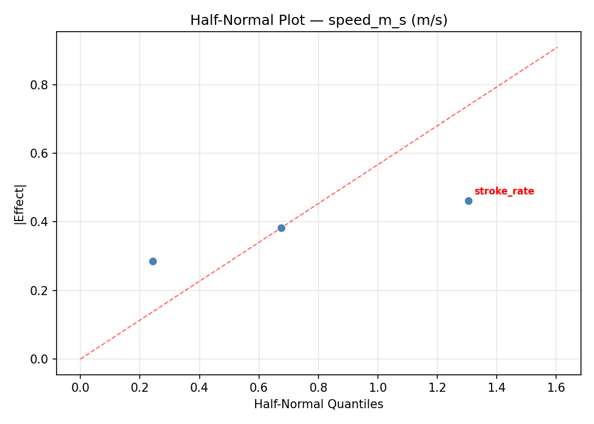
Model Diagnostics
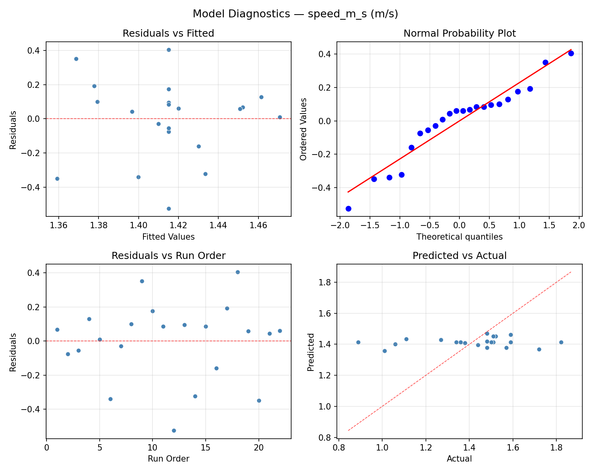
Response: energy_kj_100m
Top factors: stroke_rate (50.5%), stroke_length_m (26.7%), kick_ratio (22.8%).
ANOVA
| Source | DF | SS | MS | F | p-value |
|---|
| Source | DF | SS | MS | F | p-value |
| stroke_rate | 4 | 111.0682 | 27.7670 | 1.410 | 0.3062 |
| stroke_length_m | 4 | 40.6515 | 10.1629 | 0.516 | 0.7264 |
| kick_ratio | 4 | 20.1515 | 5.0379 | 0.256 | 0.8990 |
| Lack | of | Fit | 2 | 111.5720 | 55.7860 |
| Pure | Error | 7 | 137.8750 | | |
| Error | 9 | 249.4470 | 19.6964 | | |
| Total | 21 | 421.3182 | 20.0628 | | |
Pareto Chart

Main Effects Plot

Normal Probability Plot of Effects
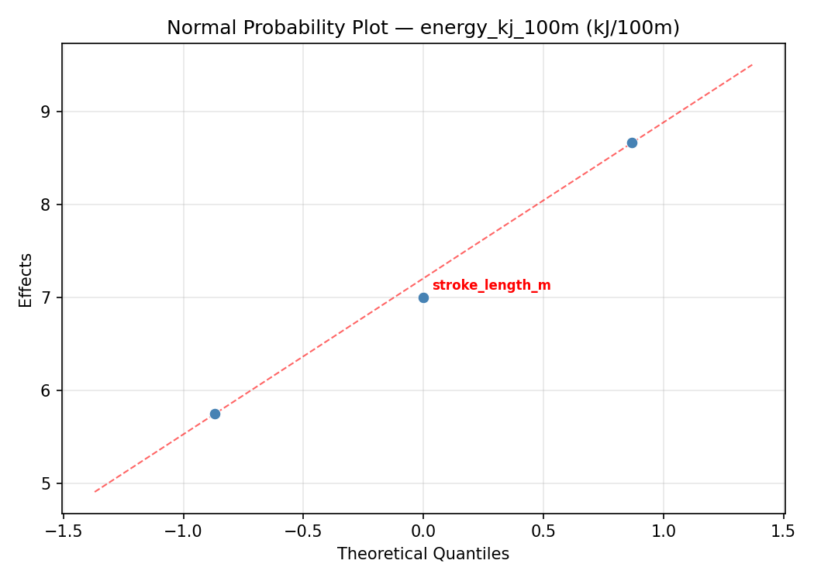
Half-Normal Plot of Effects
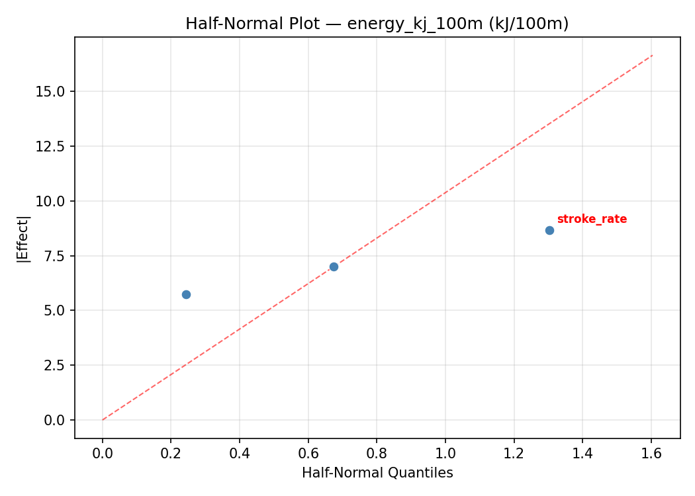
Model Diagnostics
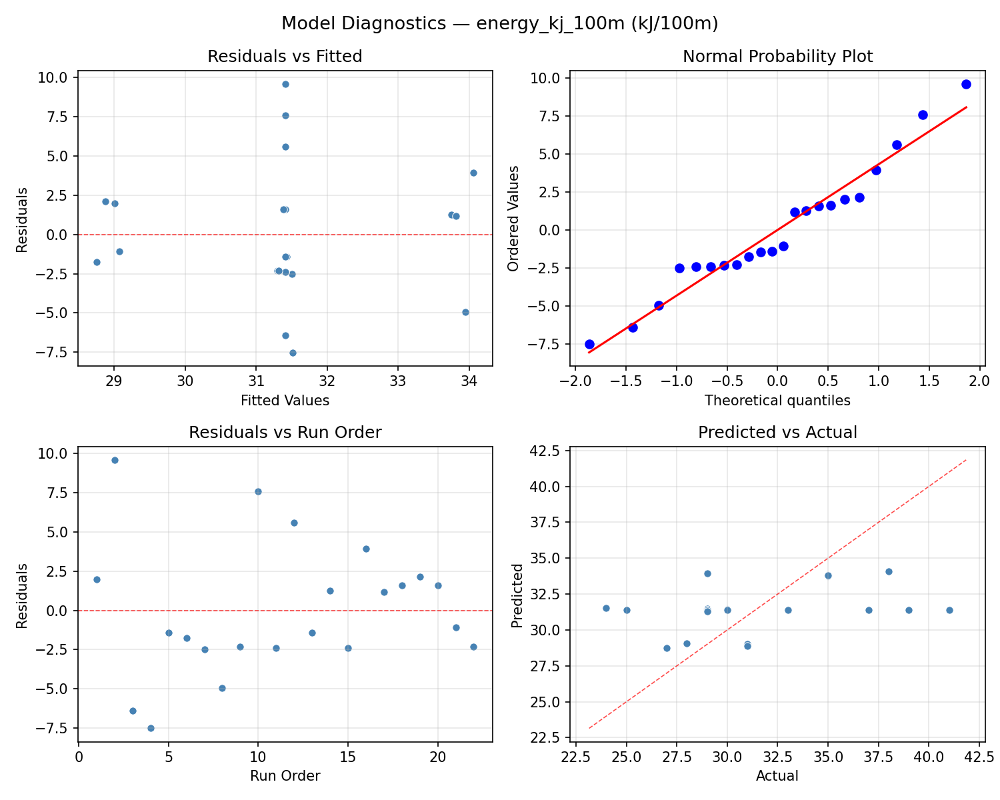
Response Surface Plots
3D surfaces fitted with quadratic RSM. Red dots are observed data points.
energy kj 100m stroke length m vs kick ratio
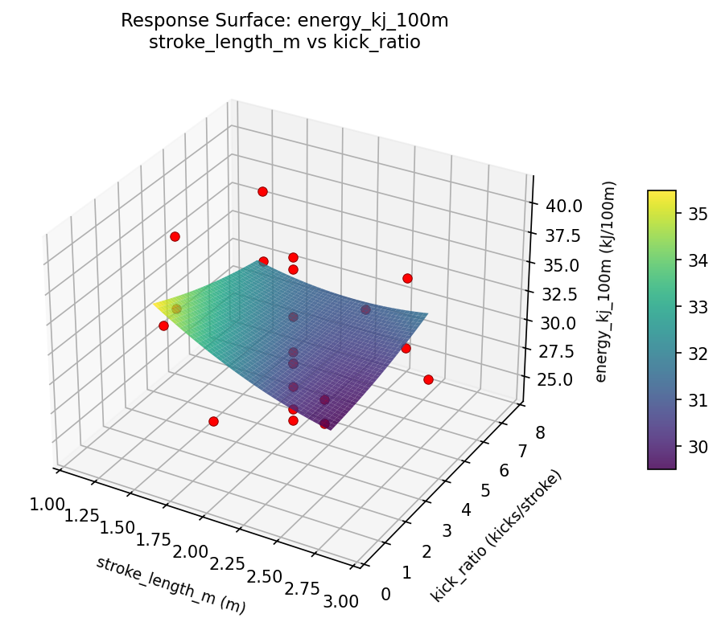
energy kj 100m stroke rate vs kick ratio
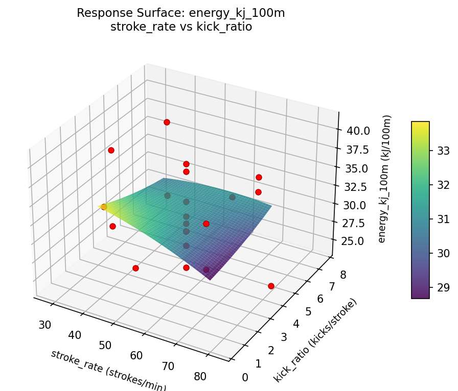
energy kj 100m stroke rate vs stroke length m
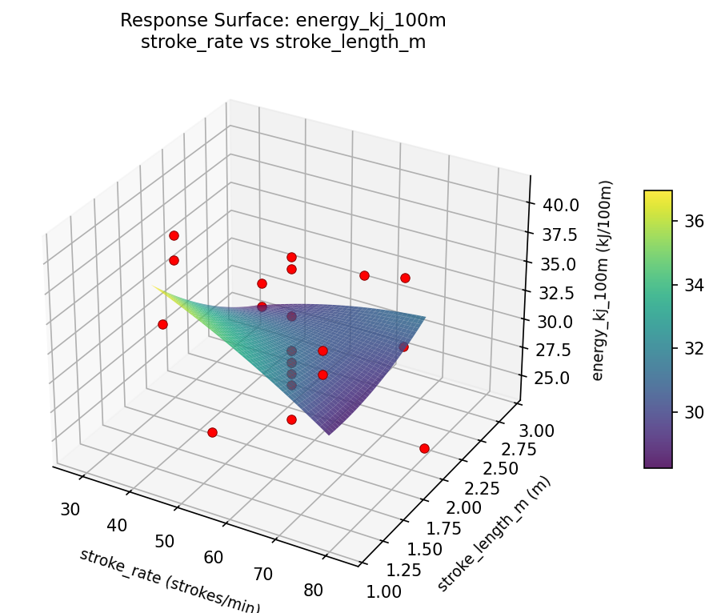
speed m s stroke length m vs kick ratio
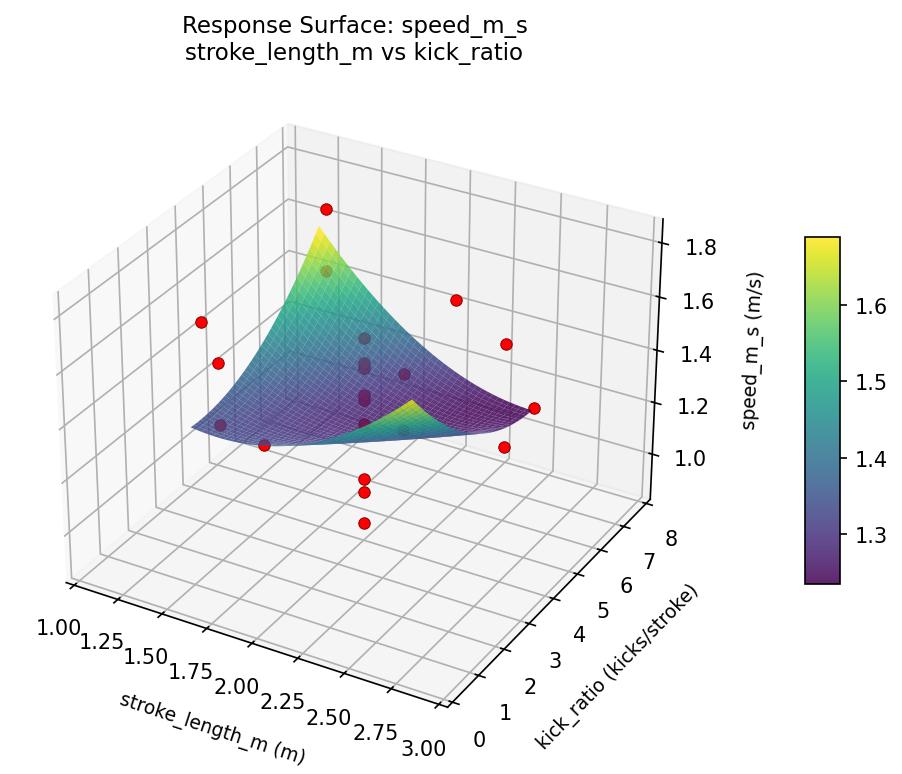
speed m s stroke rate vs kick ratio
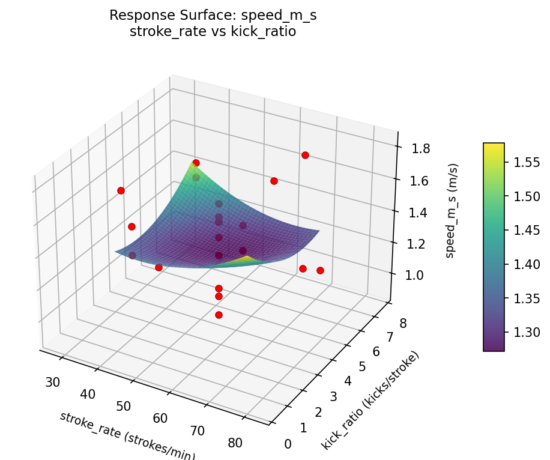
speed m s stroke rate vs stroke length m
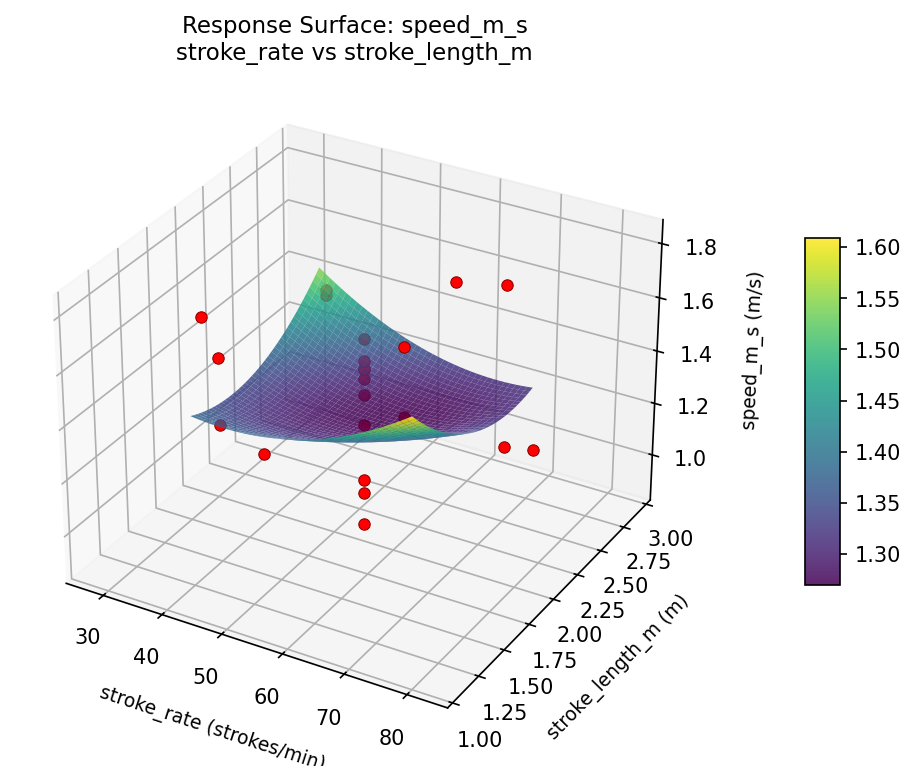
Multi-Objective Optimization
When responses compete, Derringer–Suich desirability finds the best compromise.
Each response is scaled to a 0–1 desirability, then combined via a weighted geometric mean.
Overall Desirability
D = 0.8125
Per-Response Desirability
| Response | Weight | Desirability | Predicted | Dir |
|---|
speed_m_s |
1.5 |
|
1.59 0.7297 1.59 m/s |
↑ |
energy_kj_100m |
1.0 |
|
24.00 0.9545 24.00 kJ/100m |
↓ |
Recommended Settings
| Factor | Value |
|---|
stroke_rate | 55 strokes/min |
stroke_length_m | 2.91287 m |
kick_ratio | 4 kicks/stroke |
Source: from observed run #4
Trade-off Summary
Sacrifice = how much worse than single-objective best.
| Response | Predicted | Best Observed | Sacrifice |
|---|
energy_kj_100m | 24.00 | 24.00 | +0.00 |
Top 3 Runs by Desirability
| Run | D | Factor Settings |
|---|
| #9 | 0.7844 | stroke_rate=40, stroke_length_m=2.5, kick_ratio=6 |
| #18 | 0.7210 | stroke_rate=82.3861, stroke_length_m=2, kick_ratio=4 |
Model Quality
| Response | R² | Type |
|---|
energy_kj_100m | 0.0764 | linear |
Full Multi-Objective Output
============================================================
MULTI-OBJECTIVE OPTIMIZATION
Method: Derringer-Suich Desirability Function
============================================================
Overall desirability: D = 0.8125
Response Weight Desirability Predicted Direction
---------------------------------------------------------------------
speed_m_s 1.5 0.7297 1.59 m/s ↑
energy_kj_100m 1.0 0.9545 24.00 kJ/100m ↓
Recommended settings:
stroke_rate = 55 strokes/min
stroke_length_m = 2.91287 m
kick_ratio = 4 kicks/stroke
(from observed run #4)
Trade-off summary:
speed_m_s: 1.59 (best observed: 1.82, sacrifice: +0.23)
energy_kj_100m: 24.00 (best observed: 24.00, sacrifice: +0.00)
Model quality:
speed_m_s: R² = 0.5626 (quadratic)
energy_kj_100m: R² = 0.0764 (linear)
Top 3 observed runs by overall desirability:
1. Run #4 (D=0.8125): stroke_rate=55, stroke_length_m=2.91287, kick_ratio=4
2. Run #9 (D=0.7844): stroke_rate=40, stroke_length_m=2.5, kick_ratio=6
3. Run #18 (D=0.7210): stroke_rate=82.3861, stroke_length_m=2, kick_ratio=4
Full Analysis Output
=== Main Effects: speed_m_s ===
Factor Effect Std Error % Contribution
--------------------------------------------------------------
stroke_rate 0.9300 0.0485 64.0%
stroke_length_m 0.3858 0.0485 26.5%
kick_ratio 0.1375 0.0485 9.5%
=== ANOVA Table: speed_m_s ===
Source DF SS MS F p-value
-----------------------------------------------------------------------------
stroke_rate 4 0.5151 0.1288 2.683 0.1008
stroke_length_m 4 0.2231 0.0558 1.162 0.3888
kick_ratio 4 0.0897 0.0224 0.467 0.7587
Lack of Fit 2 0.0000 0.0000 0.000 1.0000
Pure Error 7 0.3359 0.0480
Error 9 0.2608 0.0480
Total 21 1.0887 0.0518
=== Summary Statistics: speed_m_s ===
stroke_rate:
Level N Mean Std Min Max
------------------------------------------------------------
27.6139 1 1.8200 0.0000 1.8200 1.8200
40 4 1.4525 0.1141 1.3400 1.5900
55 12 1.3750 0.2194 1.0100 1.7200
70 4 1.5275 0.0419 1.5000 1.5900
82.3861 1 0.8900 0.0000 0.8900 0.8900
stroke_length_m:
Level N Mean Std Min Max
------------------------------------------------------------
1.08713 1 1.4800 0.0000 1.4800 1.4800
1.5 4 1.4725 0.0618 1.3800 1.5100
2 12 1.3342 0.2718 0.8900 1.8200
2.5 4 1.5075 0.1179 1.3400 1.5900
2.91287 1 1.7200 0.0000 1.7200 1.7200
kick_ratio:
Level N Mean Std Min Max
------------------------------------------------------------
0.348516 1 1.4400 0.0000 1.4400 1.4400
2 4 1.4850 0.1047 1.3400 1.5900
4 12 1.3575 0.2929 0.8900 1.8200
6 4 1.4950 0.0866 1.3800 1.5900
7.65148 1 1.4800 0.0000 1.4800 1.4800
=== Main Effects: energy_kj_100m ===
Factor Effect Std Error % Contribution
--------------------------------------------------------------
stroke_rate 8.5000 0.9550 50.5%
stroke_length_m 4.5000 0.9550 26.7%
kick_ratio 3.8333 0.9550 22.8%
=== ANOVA Table: energy_kj_100m ===
Source DF SS MS F p-value
-----------------------------------------------------------------------------
stroke_rate 4 111.0682 27.7670 1.410 0.3062
stroke_length_m 4 40.6515 10.1629 0.516 0.7264
kick_ratio 4 20.1515 5.0379 0.256 0.8990
Lack of Fit 2 111.5720 55.7860 2.832 0.1255
Pure Error 7 137.8750 19.6964
Error 9 249.4470 19.6964
Total 21 421.3182 20.0628
=== Summary Statistics: energy_kj_100m ===
stroke_rate:
Level N Mean Std Min Max
------------------------------------------------------------
27.6139 1 33.0000 0.0000 33.0000 33.0000
40 4 34.5000 6.4031 29.0000 41.0000
55 12 30.7500 3.7929 25.0000 38.0000
70 4 28.5000 3.1091 24.0000 31.0000
82.3861 1 37.0000 0.0000 37.0000 37.0000
stroke_length_m:
Level N Mean Std Min Max
------------------------------------------------------------
1.08713 1 30.0000 0.0000 30.0000 30.0000
1.5 4 29.5000 1.0000 29.0000 31.0000
2 12 31.6667 4.1414 25.0000 38.0000
2.5 4 33.5000 7.9373 24.0000 41.0000
2.91287 1 29.0000 0.0000 29.0000 29.0000
kick_ratio:
Level N Mean Std Min Max
------------------------------------------------------------
0.348516 1 28.0000 0.0000 28.0000 28.0000
2 4 31.2500 7.1356 24.0000 41.0000
4 12 31.8333 4.0189 25.0000 38.0000
6 4 31.7500 4.8563 29.0000 39.0000
7.65148 1 29.0000 0.0000 29.0000 29.0000
Optimization Recommendations
=== Optimization: speed_m_s ===
Direction: maximize
Best observed run: #18
stroke_rate = 40
stroke_length_m = 2.5
kick_ratio = 2
Value: 1.82
RSM Model (linear, R² = 0.1938, Adj R² = 0.0594):
Coefficients:
intercept +1.4150
stroke_rate -0.0682
stroke_length_m +0.0066
kick_ratio -0.0984
RSM Model (quadratic, R² = 0.6921, Adj R² = 0.4612):
Coefficients:
intercept +1.4288
stroke_rate -0.0682
stroke_length_m +0.0066
kick_ratio -0.0984
stroke_rate*stroke_length_m -0.1038
stroke_rate*kick_ratio -0.1362
stroke_length_m*kick_ratio -0.1812
stroke_rate^2 -0.0399
stroke_length_m^2 +0.0216
kick_ratio^2 -0.0024
Curvature analysis:
stroke_rate coef=-0.0399 negligible curvature
stroke_length_m coef=+0.0216 negligible curvature
kick_ratio coef=-0.0024 negligible curvature
Predicted optimum (from quadratic model, at observed points):
stroke_rate = 40
stroke_length_m = 2.5
kick_ratio = 2
Predicted value: 1.7300
Surface optimum (via L-BFGS-B, quadratic model):
stroke_rate = 48.2904
stroke_length_m = 2.5
kick_ratio = 2
Predicted value: 1.7422
Model quality: Moderate fit — use predictions directionally, not precisely.
Factor importance:
1. stroke_rate (effect: 0.4, contribution: 42.9%)
2. kick_ratio (effect: 0.3, contribution: 31.4%)
3. stroke_length_m (effect: 0.2, contribution: 25.7%)
=== Optimization: energy_kj_100m ===
Direction: minimize
Best observed run: #4
stroke_rate = 55
stroke_length_m = 2
kick_ratio = 4
Value: 24.0
RSM Model (linear, R² = 0.0829, Adj R² = -0.0700):
Coefficients:
intercept +31.4091
stroke_rate +1.2360
stroke_length_m -0.6193
kick_ratio +0.6849
RSM Model (quadratic, R² = 0.5110, Adj R² = 0.1443):
Coefficients:
intercept +29.3696
stroke_rate +1.2360
stroke_length_m -0.6193
kick_ratio +0.6849
stroke_rate*stroke_length_m -3.1250
stroke_rate*kick_ratio +0.1250
stroke_length_m*kick_ratio +1.3750
stroke_rate^2 +1.3697
stroke_length_m^2 +1.6697
kick_ratio^2 +0.0197
Curvature analysis:
stroke_length_m coef=+1.6697 convex (has a minimum)
stroke_rate coef=+1.3697 convex (has a minimum)
kick_ratio coef=+0.0197 negligible curvature
Notable interactions:
stroke_rate*stroke_length_m coef=-3.1250 (antagonistic)
stroke_length_m*kick_ratio coef=+1.3750 (synergistic)
Predicted optimum (from quadratic model, at observed points):
stroke_rate = 70
stroke_length_m = 1.5
kick_ratio = 2
Predicted value: 37.9743
Surface optimum (via L-BFGS-B, quadratic model):
stroke_rate = 66.0274
stroke_length_m = 2.5
kick_ratio = 2
Predicted value: 27.6396
Model quality: Moderate fit — use predictions directionally, not precisely.
Factor importance:
1. kick_ratio (effect: 11.2, contribution: 40.9%)
2. stroke_length_m (effect: 11.0, contribution: 40.0%)
3. stroke_rate (effect: 5.2, contribution: 19.1%)